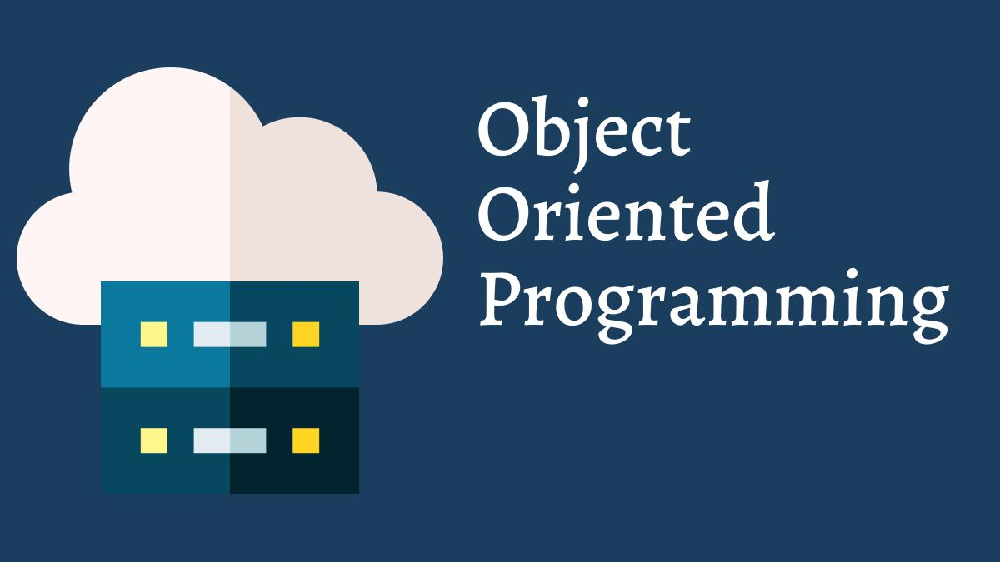
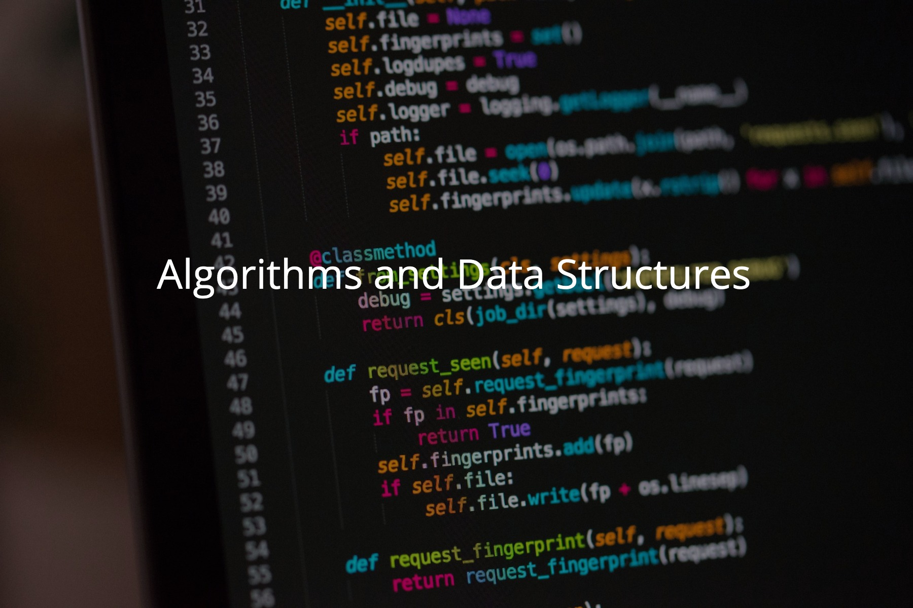

Featured Portfolio

OOP
Dice GameA console-based dice game developed using object-oriented programming principles in C#. This project demonstrates encapsulation, inheritance, and polymorphism while implementing game logic and user interaction.

Algorithms & Complexity
Search & Sort AppAn application showcasing fundamental algorithms for searching and sorting data structures. Developed in C#, this project focuses on algorithm efficiency and complexity analysis.
Game Creation
Connect FourA classic Connect Four game developed using C# and Unity. Features include an intuitive UI, AI opponent logic, and smooth gameplay mechanics to provide an engaging user experience.
Team Software Engineering
NoDos IP BlockerA collaborative group project hosted on GitHub focusing on agile software development practices. Utilized version control, issue tracking, and continuous integration to deliver a robust application.

Artificial Intelligence
An exploratory project applying AI techniques such as machine learning algorithms and neural networks. Implemented in Python to analyze data sets and generate predictive models.